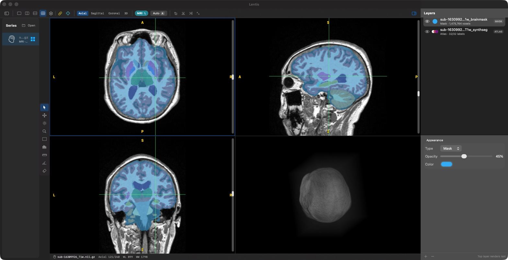

NIfTI-first
Reads 3D/4D .nii and .nii.gz files with a dependency-free Swift parser and pure-Swift DEFLATE.
A native macOS NIfTI brain viewer for CT and MRI: affine-correct neurological MPR views, interactive Metal 3D rendering, and Mask/Atlas overlays.

Reads 3D/4D .nii and .nii.gz files with a dependency-free Swift parser and pure-Swift DEFLATE.
Uses sform/qform affines, canonical RAS orientation, and neurological display conventions.
Axial, sagittal, coronal, and 3D panels share a draggable world-space crosshair.
Add NIfTI mask/atlas layers with categorical nearest-neighbour alignment and LUT support.